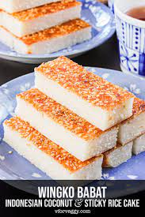

Wingko recipe

Wingko babat
Indonesian wingko babat is made for coconut lovers. With freshly grated coconut, coconut milk, and coconut oil, it's impossible not to love these yummy cakes.
Ingredients
- 300 gram freshly shredded coconut meat
- 150 gram glutinous (sticky) rice flour
- 200 gram sugar
- 1/4 teaspoon salt
- 1 egg
- 150 gram coconut milk
- 1 teaspoon vanilla extract
- coconut oil (or butter/oil) to grease the cake pan
- 2 tablespoon toasted sesame seeds
Instructions
- Preheat oven to 180 Celsius (350 Fahrenheit). Line an 8"x8" square cake pan with parchment paper, grease with coconut oil (or butter/oil) and set aside.
- Mix together freshly shredded coconut meat, glutinous rice flour, sugar, and salt. Add egg and mix well. Add coconut milk and vanilla extract, mix well.
- Pour the batter into prepared pan, sprinkle the top of the batter with toasted sesame seeds.
- Bake in preheated oven for about 50 minutes, or until a cake tester comes out clean.
- If the top of the cake doesn't have an even golden brown color, turn on the oven broiler, watch like a hawk, and remove the cake once the top has a nice even golden brown color.
- Cool the cake in the pan until room temperature. Remove the cake from pan, and cut into 20-24 pieces.
Back to recipes